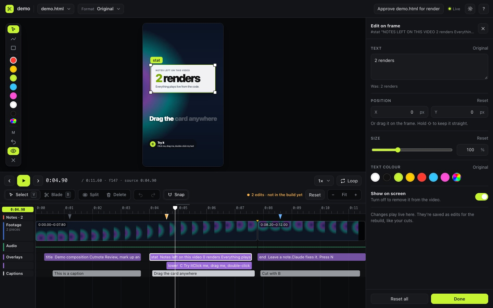

Cutnote is a video review player and timeline editor that runs in your browser. Pause anywhere, write a note, draw on the frame, cut the footage, drag things around. Everything saves as plain files Claude Code can act on.
macOS, Linux and Windows. Python and ffmpeg. No account, no uploads.
From the render problem to installing it, reviewing a real edit with 20 notes and rendering once.
No exporting drafts and no sending timestamps over chat. You watch the real thing, point at what's wrong, and it gets fixed in front of you.
Point Cutnote at a project. It finds your videos and HyperFrames compositions and plays them instantly.
Press N to leave a note at that frame. Circle things, trim the footage, move a caption.
Your notes land in review-notes.md. Claude makes the changes, marks each note done with a reply, and the page reloads by itself.
Fix, change or remember. Each note records the frame, an optional in/out range, and what was on screen.
Scribbles and boxes in any colour. Move, resize and delete marks. Each drawing saves as a PNG for Claude.
Blade, split, ripple delete, trim to playhead, drag to reorder, snapping, undo, filmstrip and waveform.
Click a caption or card on the frame. Drag it, resize it, recolour it, or change its words in the sidebar.
Reframe for 9:16, 4:5, 1:1, 16:9 or 4:3 by dragging a crop window over the frame.
For plain video files, render your cut and reframe with ffmpeg. It writes a new file and never overwrites yours.
Approve the exact build you signed off. Render scripts can refuse anything that isn't approved.
Every project on your computer in one place. Group them into stacks by series or client; your folders never move.
Drag animated overlays, caption styles and 50 sound effects onto the video. Everything snaps softly to centre, thirds and edges.
Tracks your AI assistant picks land in the Music tab. Hear each one with your video, drag along it to find the right part, then trim, fade and set its level on the Music track.
Clips load ahead of time and music and sounds keep their own clock, so playback doesn't hitch or stutter when a new shot starts.
A chip turns lime when a new version is out. Press Update now and Cutnote updates and restarts itself, then shows you what's new.
Every edit, from a split to a Library component, undoes with ⌘Z and comes back with ⇧⌘Z.
Light by default, pure-black dark with one key. Sliding controls, short hover tips on icons and pressable keyboard shortcuts.
Runs on 127.0.0.1. Serves only the folder you open and never touches Keys, private folders or .env files.
Select any overlay, card or caption, even ones a script builds while it plays. The sidebar opens with everything you can change.

Pick whichever suits you. All three give you the same app.
Paste this into Claude Code. It installs Cutnote, checks Python and ffmpeg, opens your folder and gives you the link.
When you've left notes, tell Claude "I've left notes". It reads them, makes the changes and marks each one done.
Clones Cutnote into ~/.cutnote and adds a cutnote command.
No installer, just the code.
That opens the bundled demo. Point it at your own folder the same way.
brew install ffmpegnpx hyperframes --version once.The same keys as the big editors. Press ? in the app for the full list.
Yes. Cutnote is open source under the MIT licence. Use it for anything, including client work.
No. It's a small server on your own computer, listening on 127.0.0.1. Your files never leave your machine unless you choose to share them.
No. Notes are plain Markdown and JSON, so any editor can read them. Claude Code just makes the loop fast: it reads the notes, makes the changes and replies on each one.
HyperFrames builds videos out of HTML and animation code. Cutnote plays those compositions live without rendering them. If you only work with normal video files, you don't need it.
Never. Timeline edits on a composition are saved as instructions for the rebuild. Export cut writes a new file next to the original.
Cutnote checks for a new version every few hours and shows a What's new card. Click Update now and it updates itself and reloads. Installed with git? git pull in the Cutnote folder does the same.
Any recent Chrome, Edge, Arc, Brave or Safari. Chrome-based browsers play the most video formats.